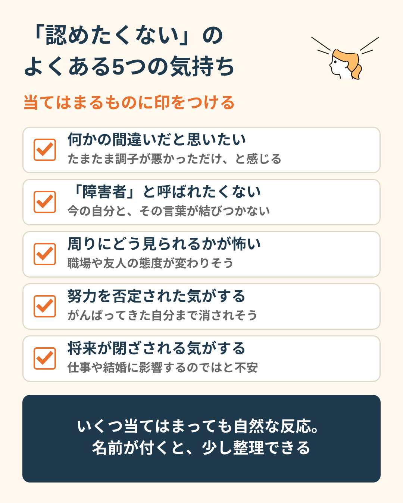
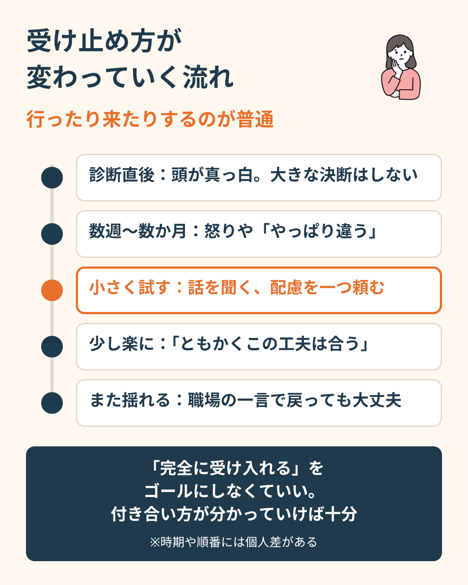
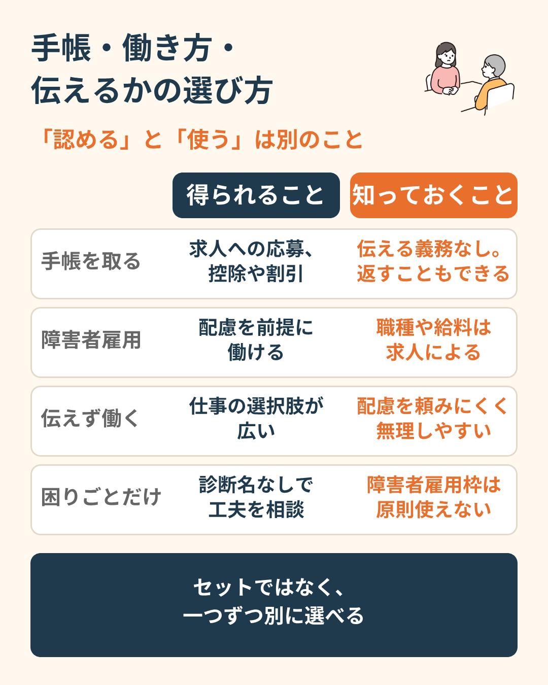
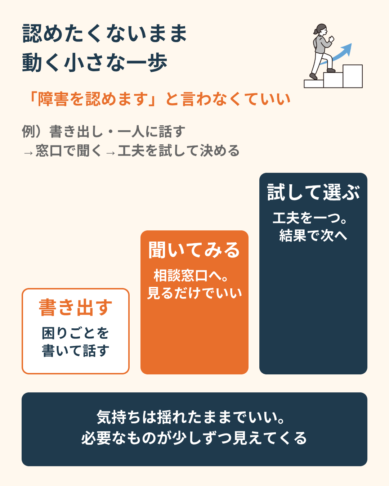
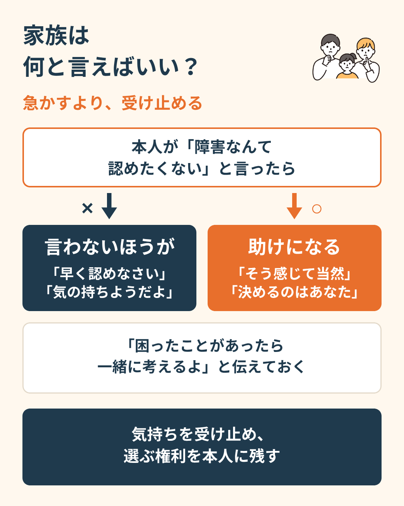

「障害を認めたくない」と感じるのは自然なこと。よくある5つの気持ち
「認めたくない」という気持ちの中身は、人によって違います。ひとことで言っても、いくつかの気持ちが重なっていることがほとんどです。相談の場でよく聞くのは、次のような気持ちです。
1つめは「何かの間違いだと思いたい」という気持ちです。「たまたま調子が悪かっただけ」「医者が大げさに言っているだけ」と感じ、診断そのものを疑いたくなります。2つめは「障害者と呼ばれることへの抵抗」です。自分の中にある「障害者」のイメージと、今の自分が結びつかず、名前を付けられることに強い違和感を覚えます。3つめは「周りにどう見られるかが怖い」という気持ちです。職場や友人、親戚に知られたら、態度が変わるのではないか、と心配になります。
4つめは「これまでの努力を否定されたように感じる」気持ちです。苦手なことを人一倍の努力で補ってきた人ほど、「障害のせい」と言われると、がんばってきた自分まで消されてしまうように感じます。5つめは「将来が閉ざされる気がする」という不安です。手帳を取ったら普通の仕事に就けないのではないか、結婚や家族に影響するのではないか、と先のことまで心配が広がります。

当てはまるものに印をつけてみてください。いくつ当てはまっても、おかしなことではありません。気持ちに名前が付くと、「自分は手帳そのものより、周りの目が怖いんだ」「障害という言葉より、これまでの努力を否定されるのがつらいんだ」と、何に引っかかっているのかが見えてきます。引っかかりが分かれば、それに合った対処を選べるようになります。
なお、気持ちが沈んで眠れない、食欲がない、何をしても楽しくない状態が2週間以上続くときは、気持ちの整理以前に、心身が疲れきっているサインかもしれません。そのときは主治医や心療内科に、今のつらさをそのまま話してください。初めての受診の流れははじめての精神科・心療内科の受け方で紹介しています。
気持ちは行ったり来たりする。受け止め方が変わっていく流れ
障害の受け止め方については、「ショック」「否認」「混乱」「努力」「受容」のように段階で説明する考え方が知られています。ただ、実際の気持ちはきれいな階段のようには進みません。少し前向きになれたと思ったら、職場での一言で振り出しに戻ったように感じることもあります。行ったり来たりするのが普通だと知っておくだけでも、「まだ受け入れられない自分はだめだ」と責めずにすみます。
よく見られる流れを、時間の目安とあわせて紹介します。診断を受けた直後は、頭が真っ白になったり、逆に何も感じなかったりします。この時期は、大きな決断をしないことがいちばん大切です。数週間から数か月たつと、「なぜ自分が」という怒りや、「やっぱり違う」という否認が強くなることがあります。調べすぎて不安が膨らむのもこの時期です。
その後、困りごとが続く中で「とりあえず、これだけは試してみるか」と、小さく動き出す時期が来ます。薬を飲んでみる、支援機関の話を聞いてみる、職場で一つだけ配慮をお願いしてみる、といった動きです。試してみて少し楽になると、「障害かどうかはともかく、この工夫は自分に合う」と感じられるようになります。この「ともかく」の状態で十分です。

「完全に受け入れる」ことをゴールにする必要はありません。障害と一緒に生きている人の中にも、「受け入れた」というより「付き合い方が分かってきた」と話す人が多くいます。大人になってから診断を受けた場合の最初の過ごし方は、大人になってASDと診断されたら、最初にやることもあわせて読んでみてください。
「診断を受けて半年は、診断書を引き出しの奥にしまって見ないようにしていました。仕事で同じミスを繰り返して落ち込んだ日に、ふと『チェックリストを使ってみたら』という主治医の言葉を思い出して試したら、ミスが減った。障害を認めたというより、使える道具が一つ増えた感じでした。」
「認める」と「支援を使う」は別のこと。手帳・障害者雇用・伝えるかどうか
「認めたくない」気持ちを強くしているものの一つが、手帳を取る、障害者雇用で働く、職場に伝える、がすべてセットに見えてしまうことです。実際には、これらは別々に選べます。手帳を持っていても、職場に伝えずに一般の求人で働く人がいます。逆に、手帳を持たずに、職場に困りごとだけを伝えて配慮を受けている人もいます。
障害者手帳は、取るかどうかを自分で決められます。取ったからといって、誰かに知らせる義務はありません。また、精神障害者保健福祉手帳は2年ごとの更新が必要で、必要がなくなれば更新しないことも、返すこともできます（手続きの細かな点は市区町村の窓口で確認してください）。「一度取ったら一生障害者」というわけではないのです。
選択肢ごとの違いを整理すると、次のようになります。手帳を取ると、障害者雇用の求人に応募できる、税金の控除や交通機関の割引などを受けられる場合がある、といった利点があります。障害者雇用で働くと、配慮を前提に働けるぶん安心感がある一方、求人の職種や給料に幅が少ないと感じる人もいます。一般の求人で伝えずに働く（クローズ）と、選べる仕事は広がりますが、配慮を頼みにくく、無理をしやすい面があります。

就労移行支援などの障害福祉サービスも、手帳がなくても、医師の診断書や意見書をもとに市区町村が認めれば使える場合があります。「手帳を取る決心がつかないから、支援も受けられない」と思い込まず、まず窓口で聞いてみる価値があります。手帳の利点と心配を詳しく比べたいときは障害者手帳を取るべきか迷っているときの考え方、伝えるかどうかはオープン就労とクローズ就労の違いと選び方で詳しく解説しています。
認めたくないまま動くための、小さな5つの一歩
気持ちの整理がつくのを待っていると、その間に仕事の困りごとが積み重なり、体調を崩してしまうことがあります。だからこそ、気持ちは揺れたままでいいので、小さく動いてみることをおすすめします。どれも「障害を認めます」と宣言する必要のない一歩です。
1つめは、困っていることを書き出すことです。障害名ではなく、「電話を取りながらメモができない」「朝起きられない日が月に数回ある」のように、場面で書きます。2つめは、信頼できる一人に話すことです。家族でも友人でも主治医でもかまいません。誰か一人に話すだけで、頭の中が整理されることがあります。
3つめは、話を聞くだけのつもりで相談窓口に行くことです。ハローワークの専門援助部門、障害者就業・生活支援センター、就労移行支援事業所などは、「まだ手帳は持っていない」「決めていない」状態でも相談できます。見学したからといって、利用しなければいけないわけではありません。4つめは、工夫を一つだけ試すことです。チェックリスト、タイマー、イヤーマフ、指示をメールでもらうなど、一つだけ試して、楽になったかを確かめます。
5つめは、試した結果をもとに、次を決めることです。工夫だけで十分なら、そのまま続ければいい。もっと支えが必要だと感じたら、手帳や障害者雇用を選択肢に加えればいい。この順番なら、「認めるかどうか」という大きな問いに答えなくても、自分に必要なものが少しずつ見えてきます。

家族や周りの人へ。言わないほうがいい言葉と、助けになる関わり方
本人が障害を認めたくないとき、家族や周りの人も戸惑います。「早く手帳を取ったほうがいい」と焦ったり、反対に「あなたは障害なんかじゃない」と一緒に否定したりしたくなるものです。どちらも本人を思っての言葉ですが、本人にとっては、気持ちを置き去りにされたように感じることがあります。
言わないほうがいい言葉の例は、「早く認めなさい」「障害者なんだから仕方ない」「気の持ちようだよ」「みんなそのくらい我慢している」などです。急かす言葉は追い詰め、軽くする言葉は「分かってもらえない」という孤独につながります。代わりに助けになるのは、「受け入れられないのは当然だと思う」「困っていることがあったら、一緒に考えるよ」「決めるのはあなたでいい」といった、気持ちをそのまま受け止め、選ぶ権利を本人に残す言葉です。
関わり方としては、本人が話したいときに聞ける距離にいること、診断名より「今日困ったこと」に関心を向けること、相談窓口の情報を押しつけずに「ここにあるよ」と置いておくことが助けになります。家族自身が疲れてしまったときは、家族向けの相談窓口や家族会を使うのも一つの方法です。家族が一人で抱え込まないことが、結果的に本人の安心にもつながります。

職場の上司や同僚の立場なら、診断名を聞き出そうとせず、「どんな場面で困っているか」「どうすると仕事がしやすいか」を本人と一緒に考える姿勢が大切です。障害を職場に伝えるかどうかは、本人が決めることです。伝えてもらえたときは、その勇気を受け止め、具体的な工夫の相談につなげてください。
「娘が診断を受けたとき、私のほうが受け入れられなくて、『そんなはずない』と言ってしまいました。あとから娘に『あのとき、お母さんにも否定された気がした』と言われて。今は、決めるのは娘、私は話を聞く係、と決めています。」